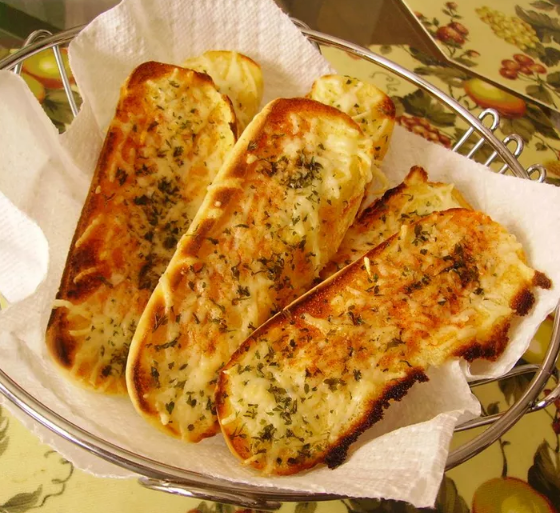

< Back to Home
Cheesy Garlic Bread

Description
This hot dog bun garlic bread recipe will be a quick addition to your
weeknight Italian dinners.
Ingredients
- 2 tablespoons grated Parmesan cheese
- 1 teaspoon garlic powder
- 1 teaspoon dried basil, crushed
- 4 hot dog buns, split
- 2 tablespoons margarine, softened
Steps
-
Preheat the oven to 400 degrees F (200 degrees C). Line a rimmed baking
sheet with parchment paper
-
Stir Parmesan cheese, garlic powder, and basil together in a small bowl.
-
Place hot dog buns, cut-sides up, onto the prepared baking sheet. Spread
margarine onto buns, then sprinkle Parmesan mixture over top.
- Bake in the preheated oven until golden brown, about 10 minutes.